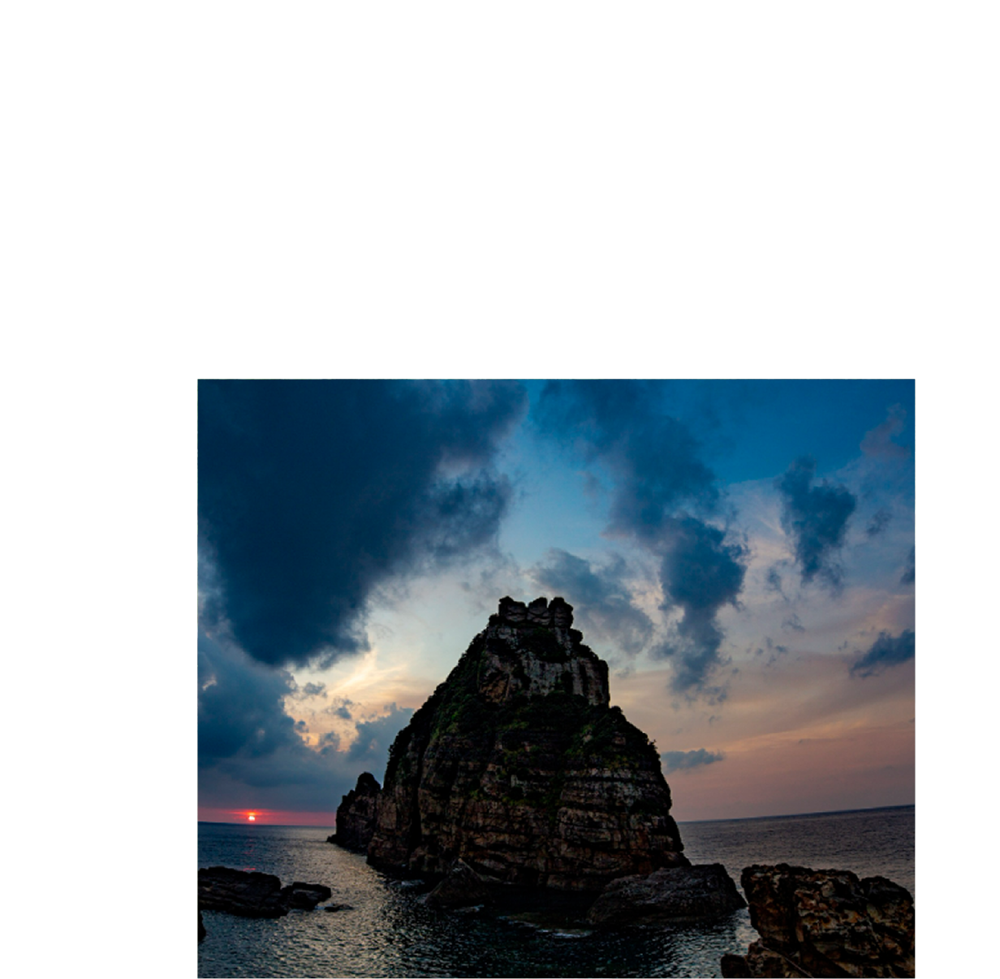

-
鹿児島県
鹿児島県は、桜島や屋久島など雄大な自然に囲まれた土地です。薩摩藩の歴史や伝統工芸、焼酎文化も息づきます。 黒豚やさつま揚げなどの地元グルメを味わいながら、温かい人々と触れ合い、自然・文化・食をゆったり楽しめる、心に残る旅ができる県です。

お土産


観光地
-

知林ヵ島
鹿児島県指宿市にある知林ヶ島は、砂の道「ちりりんロード」で陸とつながる不思議な無人島。干潮時にだけ現れる道を歩いて渡る体験はまるで冒険気分！島では美しい海と豊かな自然が迎えてくれます。カップルや家族連れにも人気の癒しスポットです。
-

嘉例川駅
鹿児島県霧島市にある嘉例川駅は、築100年以上の木造駅舎が今も現役で使われている風情あふれる駅。ノスタルジックな雰囲気が漂い、まるで時間がゆっくり流れているよう。観光列車「はやとの風」も停車し、駅弁「百年の旅物語かれい川」も人気です。
-

甑島
鹿児島県の西に浮かぶ甑島（こしきじま）は、透き通る海と断崖絶壁の絶景が広がる癒しの島。昔ながらの漁村の風景や、新鮮な海の幸が楽しめる食文化も魅力です。フェリーでのんびり旅して、島時間を満喫してみませんか？
体験
-

泥染め体験
鹿児島県の正助ふるさと村では、昔ながらの田舎体験が楽しめます。そば打ちや陶芸、農業体験など、自然とふれあいながら心温まるひとときを満喫。四季折々の風景に包まれ、のんびりとした時間を過ごしたい方にぴったりのスポットです。